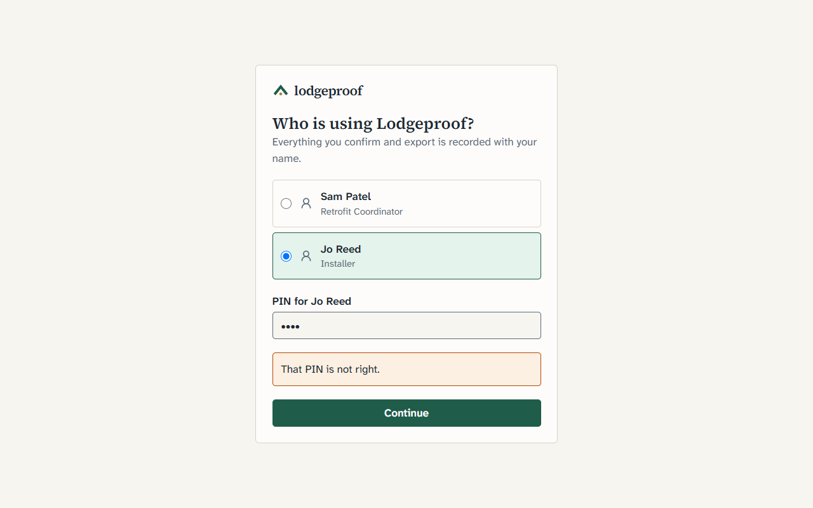
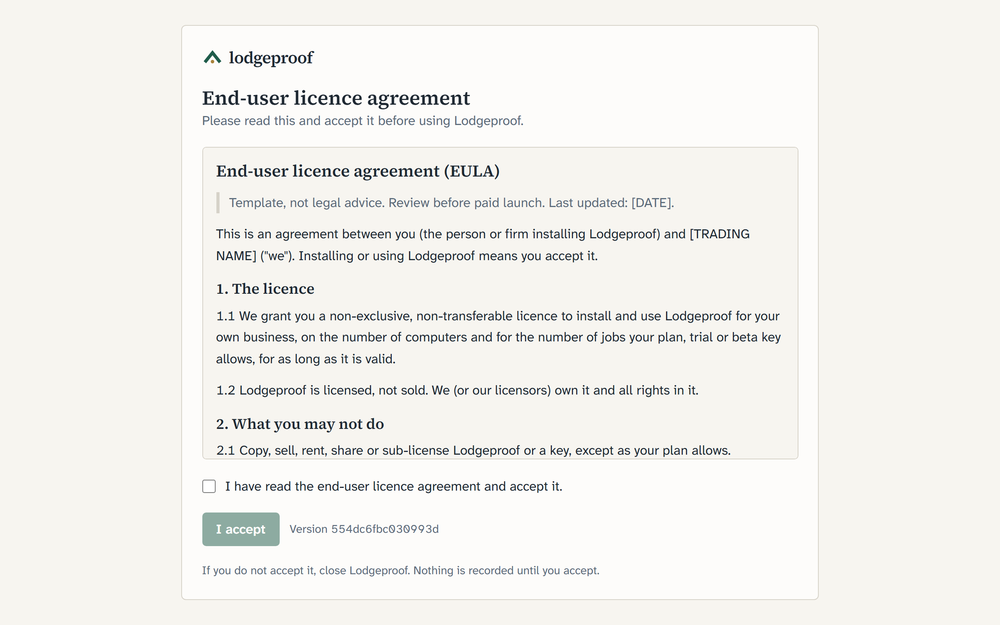
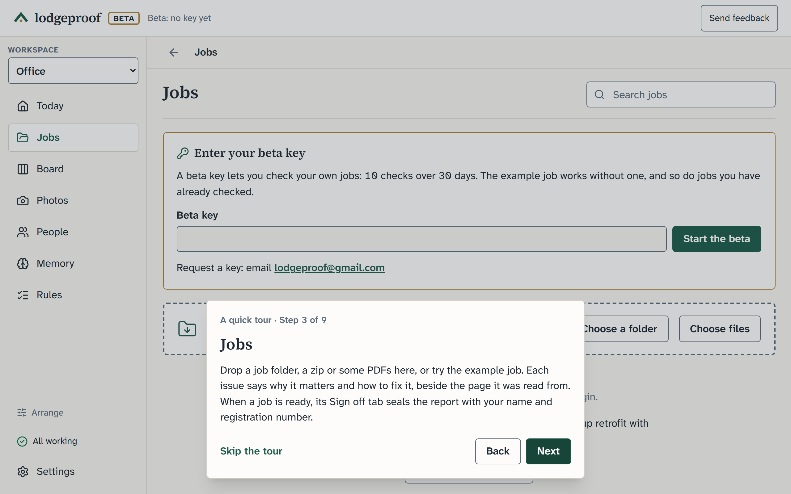
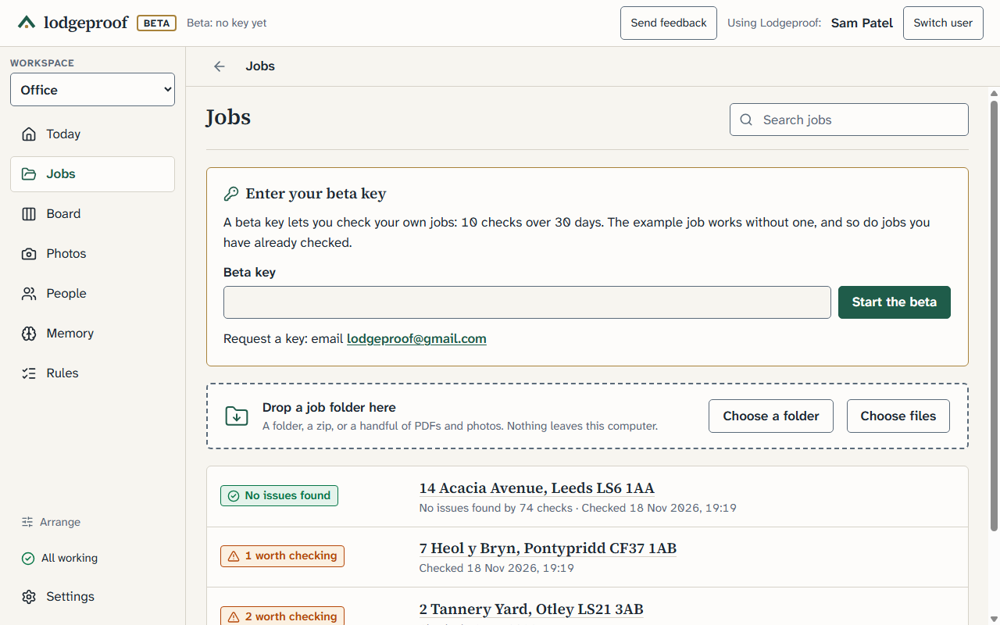
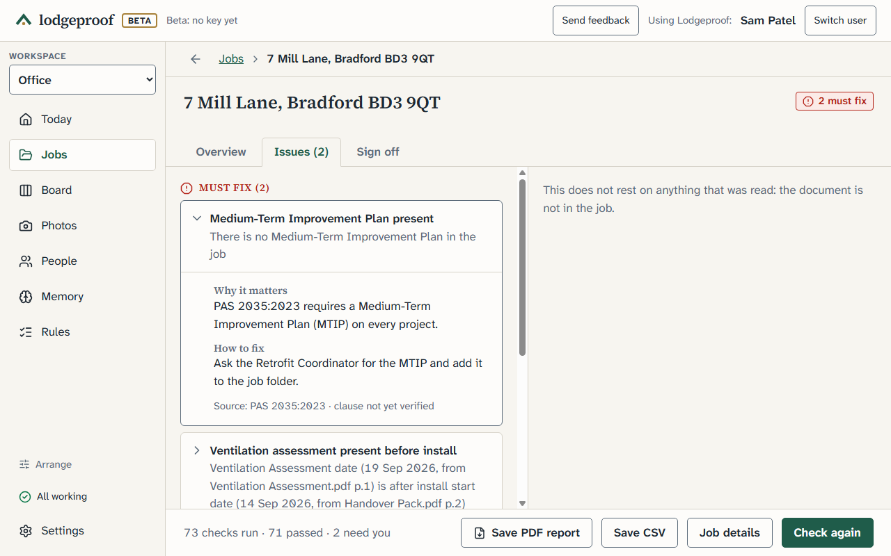
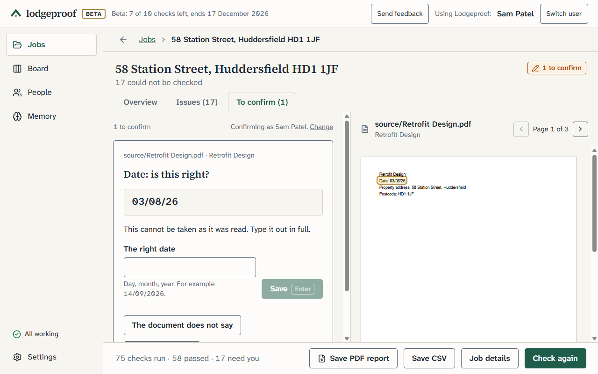
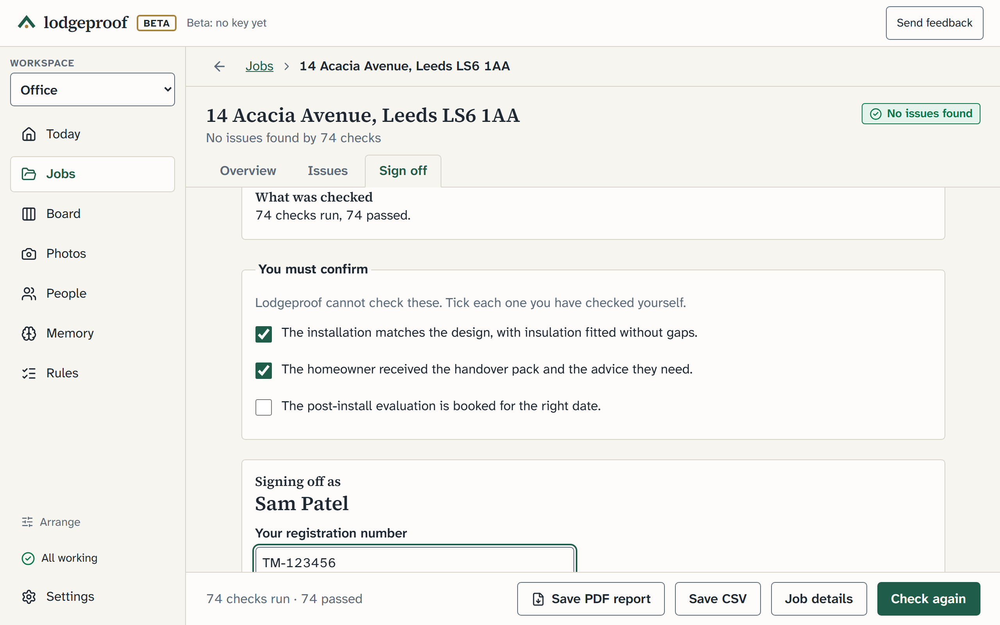
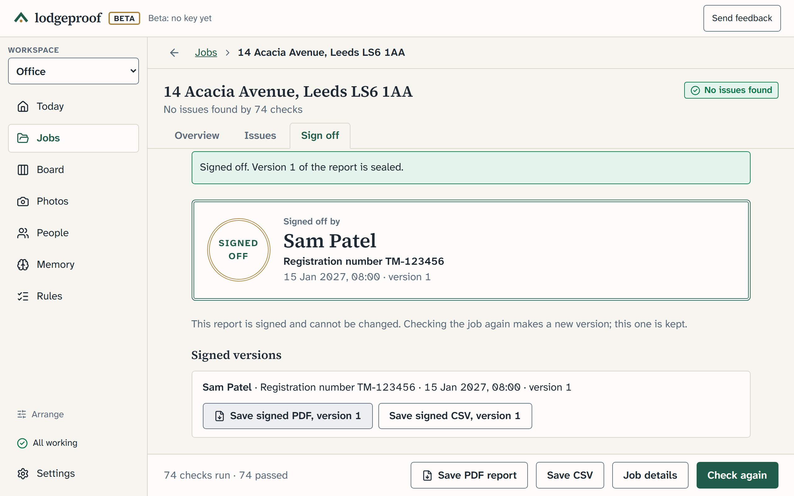
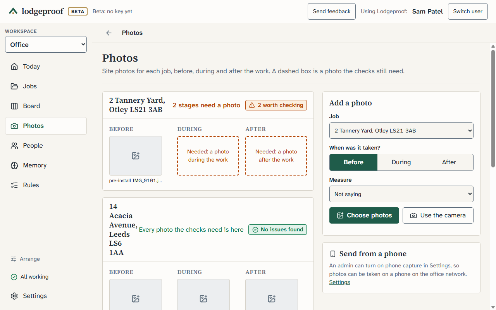
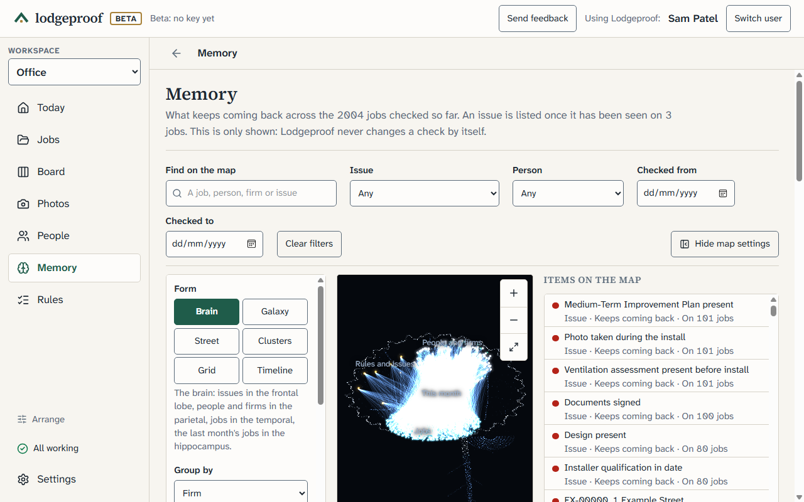

Lodgeproof user guide
For Lodgeproof 0.4 on Windows 10 and 11. Lodgeproof reads a retrofit job's documents and photos and checks them against PAS 2035 before the job is lodged. Everything happens on your computer: your jobs are never sent anywhere. What it finds is advice; the decisions are yours.
Contents
- 1. Install
- 2. The first time you open it
- 3. Add a job
- 4. Read what was found
- 5. Confirm what Lodgeproof was not sure of
- 6. Save the report
- 7. Sign off a job
- 8. Photos and the fitter's phone
- 9. Today, Board, People and Memory
- 10. Settings, profiles and updates
- 11. Where your jobs are kept
- 12. Getting help
1. Install
1. Download the installer from the website's Download page (the file ending in _x64-setup.exe). 2. Open it. The beta is not code-signed yet, so Windows may say it protected your PC: choose More info, then Run anyway. 3. It installs for you only and needs no administrator. It includes everything it needs.
To check a job of your own you need a beta key: email lodgeproof@gmail.com. The example job works without one, and so does any job you have already checked.
2. The first time you open it
Who is using Lodgeproof. If your office has made profiles, choose your name (and type your PIN if you have one). Each person's choices, sign-offs and accepted terms are their own.

The terms. Read the licence (and the beta agreement, with a beta key), tick that you accept it, and choose I accept. You are asked once, and again only if the text changes.

A quick tour. A two-minute look round the screens of your workspace. Each step opens the screen it describes. Skip the tour at any time, or press Escape; it is in Settings under Show the tour again.

Your workspace. The sidebar shows the screens for your role: the office sees everything; a coordinator, assessor, designer or installer sees their own. Switch workspace at the top of the sidebar if your role allows, and choose Arrange to reorder, hide or pin sections.
3. Add a job
Go to Jobs and drop a job folder onto the window, or choose Choose a folder or Choose files. A folder is read where it is; a zip or a handful of PDFs and photos is copied in. Nothing in your folder is changed.

A job needs a few details Lodgeproof checks the paperwork against: the job reference, the measures and the people. If the folder has no job sheet, fill in the Job details form; they are kept in the job's own folder. Then choose Check job.
Want to see it first? Choose Open the example job: a made-up retrofit with two problems to find.
4. Read what was found
Each job shows a summary: how many checks ran, how many passed, and what needs you. Open Issues to see each one.

- Must fix: the job is not ready to lodge until this is put right.
- Worth checking: probably a problem; look before lodging.
- Good practice: not required, but worth doing.
- Could not check: something needed to decide was not found or could not be read.
Each issue says why it matters and how to fix it, with the document page it was read from beside it. After fixing something, choose Check again.
5. Confirm what Lodgeproof was not sure of
When a value was hard to read (a faint scan, a two-figure year), Lodgeproof asks rather than guesses. Answer each question with the page beside it: Enter accepts, E edits, S skips. Your answers are kept with your name, and the job is checked again.

6. Save the report
Save PDF report or Save CSV at the foot of a job. The PDF lists every finding with the document and page it rests on, the rule packs used and when it was checked. Add your firm's logo in Settings to print it on every report.
7. Sign off a job
When a job is ready, its Sign off tab is where a Retrofit Coordinator (or an admin) signs it off.
1. Read what was checked. 2. Tick every item under You must confirm: things only you can check, such as whether the work matches the design on site. 3. Check your registration number. It comes from your profile or the People register, or you type it once. 4. If must-fix items are still open, write down why you are signing off anyway. 5. Choose Sign off job.

The report is sealed with your name, registration number and the date, and kept as version 1. A signed report is never changed. If the job is checked again, sign it off again to make version 2; every version stays, to save at any time.

8. Photos and the fitter's phone
Photos shows, job by job, the photos the checks still need: before, during and after the work. A dashed box is a photo still missing.

Installers can send photos straight from site:
1. In Settings, an admin turns on Phone capture. It works over the office network only. 2. On the phone, open the address shown and type the pairing code. 3. Choose the job, the stage and the measure, take the photo and choose Send photo.
On the phone, Add to Home Screen makes it an app (Lodgeproof Site). With no signal, photos are kept on the phone and sent when it can reach the office computer again. The same photo is never added twice.
9. Today, Board, People and Memory
- Today: what needs you now, most pressing first.
- Board: every job by what its last check found. A job moves when it is checked again.
- People: everyone named on your jobs, with their qualifications and registrations, and anything about to run out.
- Memory: what keeps coming back across your jobs, drawn as a map in six forms (Brain, Galaxy, Street, Clusters, Grid, Timeline). Search, filter and open a job from it. It only shows: it never changes a check.

10. Settings, profiles and updates
- Your name and your firm's name and logo for reports; larger text; light or dark.
- Profiles (admins): add people with a role and an optional PIN. The activity log shows who did what.
- Updates: Lodgeproof says when a new version or new rules are available. An office with no internet can install a new version from a file: the installer and its
.sigfile together, on a USB stick or by email. Lodgeproof checks the signature before anything runs; only an admin can install. - Phone capture for installers (section 8).
- Show the tour again, under About.
11. Where your jobs are kept
Lodgeproof keeps what it knows about your jobs in %APPDATA%\Lodgeproof on this computer. Folders you add are read where they are and never changed. Signed reports are kept under each job. To move to a new computer, copy that folder; if you have a licence, ask us to free its seat.
12. Getting help
- Send feedback at the top of the window: your note is saved on this computer, then an email opens for you to send. A job's findings are added only if you choose, and never its documents.
- All working (or Not working) at the foot of the sidebar shows how Lodgeproof stands and offers Repair, which runs only safe fixes.
- Email lodgeproof@gmail.com. Please do not send customers' documents.